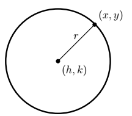
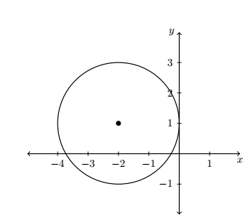
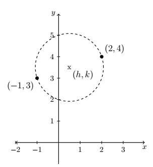

CH 7.1 – Introduction to Conics & Circles
In this chapter, we study the Conic Sections — literally "sections of a cone." Imagine a double-napped cone as seen below being "sliced" by a plane. If we slice the cone with a horizontal plane the resulting curve is a circle. The image will come later... Please ask your instructor for one.
Definition of a Circle
A circle with center \((h,k)\) and radius \(r > 0\) is the set of all points \((x, y)\) in the plane whose distance to \((h,k)\) is \(r\).

From this picture, we see that a point \((x,y)\) is on the circle if and only if its distance to \((h,k)\) is \(r\). We express this relationship algebraically using the distance formula:
\[ r = \sqrt{(x-h)^2 + (y-k)^2} \]By squaring both sides of this equation, we get an equivalent equation (since \(r > 0\)) which gives us the standard equation of a circle.
The Standard Equation of a Circle
The equation of a circle with center \((h,k)\) and radius \(r > 0\) is
\[ (x-h)^2 + (y-k)^2 = r^2. \]Example
- Write the standard equation of the circle with center \((-2,3)\) and radius \(5\).
- Graph \((x+2)^2+(y-1)^2 = 4\). Find the center and radius.
Solution
1. Here, \((h,k) = (-2,3)\) and \(r = 5\), so we get
\[ \begin{array}{rcl} (x-(-2))^2+(y-3)^2 &=& (5)^2 \\[6pt] (x+2)^2+(y-3)^2 &=& 25 \end{array} \]2. From the standard form of a circle, we have that \(x + 2\) is \(x - h\), so \(h = -2\) and \(y - 1\) is \(y - k\) so \(k = 1\). This tells us that our center is \((-2,1)\). Furthermore, \(r^2 = 4\), so \(r = 2\). Thus we have a circle centered at \((-2,1)\) with a radius of \(2\). Graphing gives us

If we were to expand the equation in the previous example and gather up like terms, instead of the easily recognizable \((x+2)^2 + (y-1)^2 = 4\), we'd be contending with \(x^2 + 4x + y^2 - 2y + 1 = 0.\) If we're given such an equation, we can complete the square in each of the variables to see if it fits the standard form of a circle by following the steps given below.
To Write the Equation of a Circle in Standard Form
- Group the same variables together on one side of the equation and position the constant on the other side.
- Complete the square on both variables as needed.
- Divide both sides by the coefficient of the squares.
Example
Complete the square to find the center and radius of \(3x^2 - 6x + 3y^2 + 4y - 4 = 0\).
Solution
To find the solution we first need to start by completing the square to put the equation into our standard form:
\[ \begin{array}{rclr} 3x^2 - 6x + 3y^2 + 4y - 4 &=& 0 & \\[6pt] 3x^2 - 6x + 3y^2 + 4y &=& 4 & \text{add } 4 \text{ to both sides} \\[6pt] 3\left(x^2 - 2x\right) + 3\left(y^2 + \dfrac{4}{3}y\right) &=& 4 & \text{factor out leading coefficients} \\[10pt] 3\left(x^2 - 2x + \underline{1}\right) + 3\left(y^2 + \dfrac{4}{3}y + \underline{\underline{\dfrac{4}{9}}}\right) &=& 4 + 3\underline{(1)} + 3\underline{\underline{\left(\dfrac{4}{9}\right)}} & \text{complete the square in } x, y \\[10pt] 3(x-1)^2 + 3\left(y + \dfrac{2}{3}\right)^2 &=& \dfrac{25}{3} & \text{factor} \\[10pt] (x-1)^2 + \left(y + \dfrac{2}{3}\right)^2 &=& \dfrac{25}{9} & \text{divide both sides by } 3 \end{array} \]Using the standard form of a circle, we identify \(x - 1\) as \(x - h\), so \(h = 1\), and \(y + \frac{2}{3}\) as \(y - k\), so \(k = -\frac{2}{3}\). Hence, the center is \((h,k) = \left(1, -\frac{2}{3}\right)\). Furthermore, we see that \(r^2 = \frac{25}{9}\) so the radius is \(r = \frac{5}{3}\).
It is possible to obtain equations like \((x-3)^2 + (y+1)^2 = 0\) or \((x-3)^2 + (y+1)^2 = -1\), neither of which describes a circle. (Do you see why not?) The reader is encouraged to think about what, if any, points lie on the graphs of these two equations. The next example uses the Midpoint Formula \(\left(\dfrac{x_1+x_2}{2},\dfrac{y_1+y_2}{2}\right)\), in conjunction with the ideas presented so far in this section.
Example
Write the standard equation of the circle which has \((-1,3)\) and \((2,4)\) as the endpoints of a diameter.
Solution
We recall that a diameter of a circle is a line segment containing the center and two points on the circle. Plotting the given data yields

Since the given points are endpoints of a diameter, we know their midpoint \((h, k)\) is the center of the circle. Using the midpoint formula gives us
\[ \begin{array}{rcl} (h,k) &=& \left(\dfrac{x_1 + x_2}{2},\ \dfrac{y_1 + y_2}{2}\right) \\[10pt] &=& \left(\dfrac{-1+2}{2},\ \dfrac{3+4}{2}\right) \\[10pt] &=& \left(\dfrac{1}{2},\ \dfrac{7}{2}\right) \end{array} \]The diameter of the circle is the distance between the given points, so we know that half of the distance is the radius. Thus,
\[ \begin{array}{rcl} r &=& \dfrac{1}{2}\sqrt{\left(x_2 - x_1\right)^2+\left(y_2 - y_1\right)^2} \\[10pt] &=& \dfrac{1}{2}\sqrt{(2-(-1))^2+(4-3)^2} \\[10pt] &=& \dfrac{1}{2}\sqrt{3^2+1^2} \\[10pt] &=& \dfrac{\sqrt{10}}{2} \end{array} \]Finally, since \(\left(\dfrac{\sqrt{10}}{2}\right)^2 = \dfrac{10}{4}\), our answer becomes
\[ \left(x - \dfrac{1}{2}\right)^2 + \left(y - \dfrac{7}{2}\right)^2 = \dfrac{10}{4} \]We close this section with the most important circle in all of mathematics: the Unit Circle.
The Unit Circle
The Unit Circle is the circle centered at \((0,0)\) with a radius of \(1\). The standard equation of the Unit Circle is
\[ x^2 + y^2 = 1. \]Example
Find the points on the unit circle with \(y\)-coordinate \(\dfrac{\sqrt{3}}{2}\).
Solution
We replace \(y\) with \(\dfrac{\sqrt{3}}{2}\) in the equation \(x^2 + y^2 = 1\) to get
\[ \begin{array}{rcl} x^2 + y^2 &=& 1 \\[6pt] x^2 + \left(\dfrac{\sqrt{3}}{2}\right)^2 &=& 1 \\[13pt] \dfrac{3}{4} + x^2 &=& 1 \\[6pt] x^2 &=& \dfrac{1}{4} \\[6pt] x &=& \pm\sqrt{\dfrac{1}{4}} \\[7pt] x &=& \pm\dfrac{1}{2} \end{array} \]Our final answers are \(\left(\dfrac{1}{2},\ \dfrac{\sqrt{3}}{2}\right)\) and \(\left(-\dfrac{1}{2},\ \dfrac{\sqrt{3}}{2}\right)\).
Exercises
Exercises to be added at a later date.